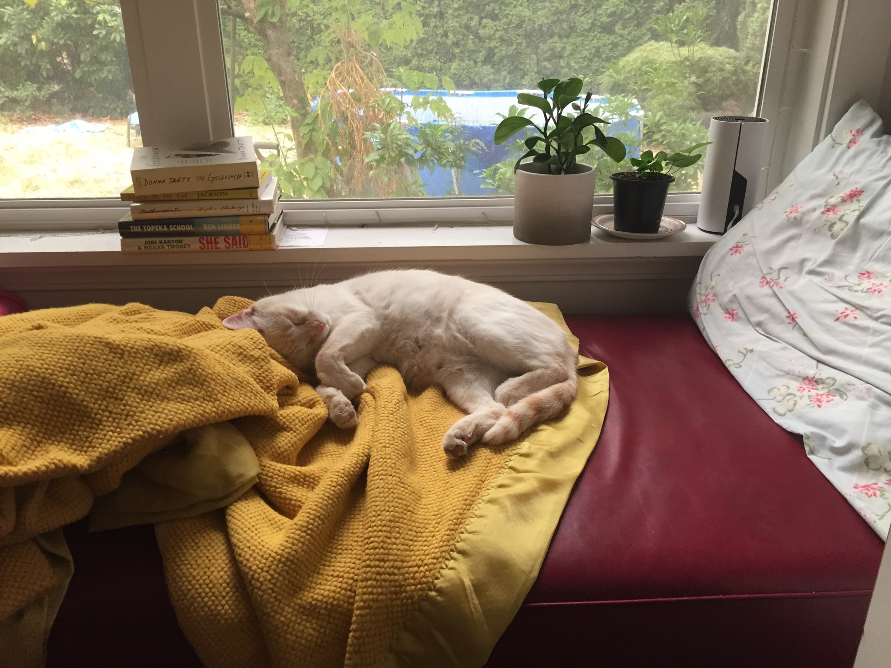

Welcome to Bobott's Blog

Hello! I'm Bobott and I'm a cat. My coloring is Flame point. That means that I have a cream body and an orange face and tail. To read more about Flame Points click here.
These are some of my favorite things:
- Tuna
- Cuddling on cold days
- Crinkle balls
- My friend, Grey cat
- Being chased
My Typical Day:
- Wake up and eat
- One hour outside time
- Snuggle time
- String play
- Outside time
- TUNA TIME
- Play date with Grey cat
- Second dinner
- Bed time